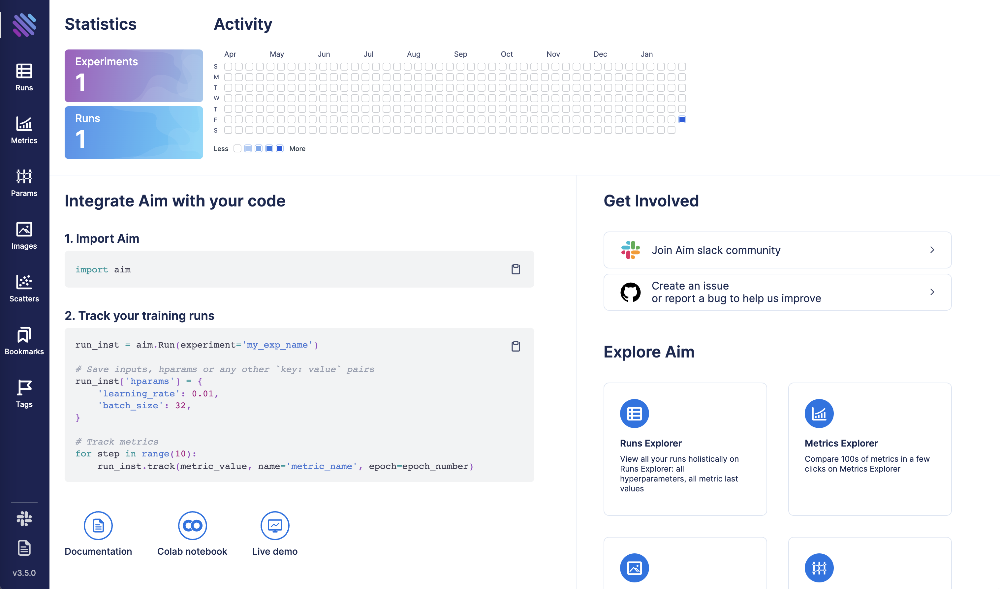
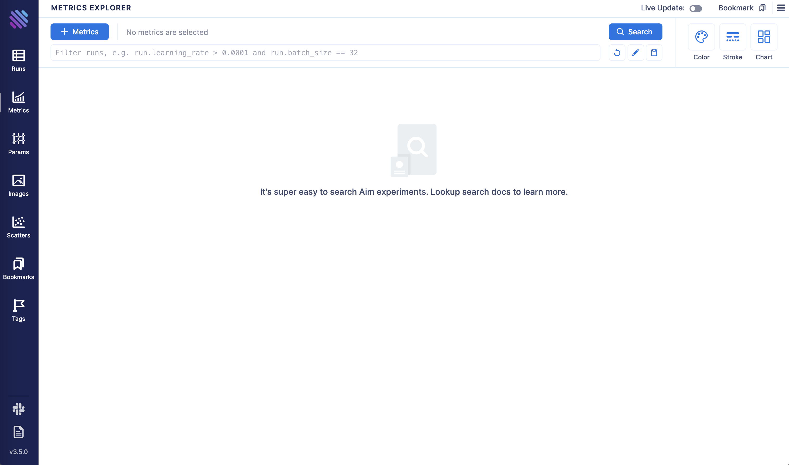
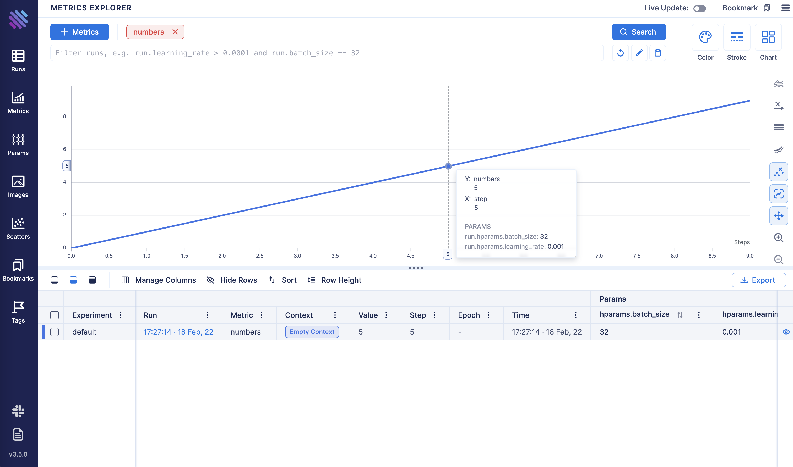
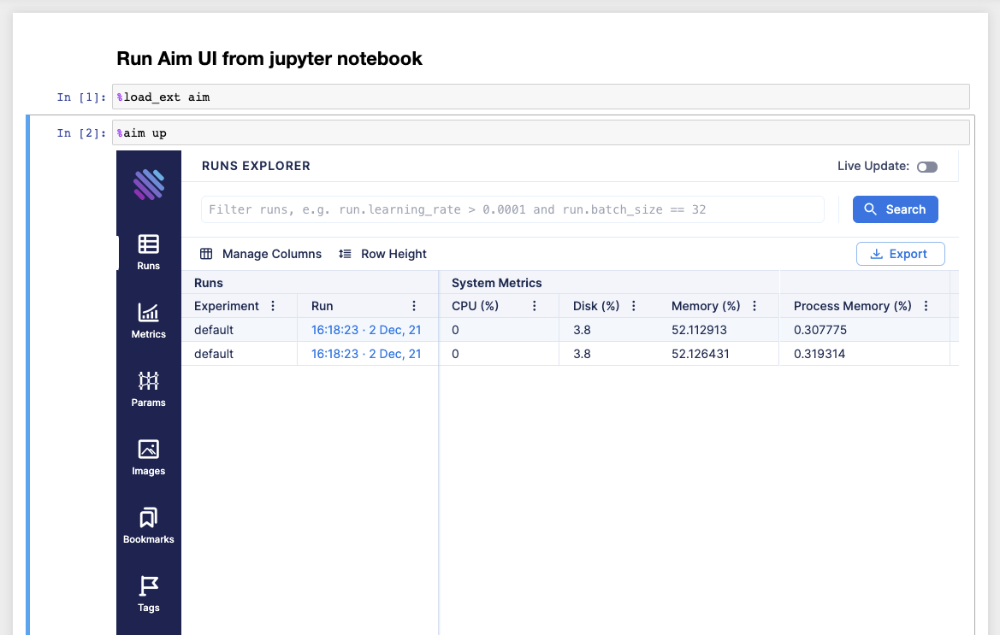

Get started with Aim
This section shows a simple end-to-end aim setup. It starts from the installation, shows how to run Aim UI and explore the results. Use this as a starting point to get familiar with the basics of Aim while getting up and running.
Installing Aim
Aim is a python package available for Linux and MacOs for Python versions 3.6+. Install Aim using pip3:
pip3 install aim
Verify aim was properly installed
aim version
You should see the line listing newly installed version of Aim. For instance:
Aim v3.5.1
The installed package includes Python SDK needed for tracking training runs, UI for browsing the results and CLI for managing UI and results.
Nightly releases
Aim also provides daily dev packages with the features developed between main minor releases.
pip3 install --pre aim
Please note, that if the dependencies of aim are not already installed, this command will try to install the development versions of those packages as well.
Previous daily dev packages can be installed using the following command:
pip3 install aim==3.x.0.devyyyymmdd
Initializing Aim repository
Aim repository is the space where all your training runs are logged.
To initialize aim repo in the current working directory, run:
aim init
You should see something like this on your Command line:
Initialized a new Aim repository at /home/user/aim
Your workspace is now ready for tracking training runs with Aim.
Tracking data with Aim SDK
To start tracking, first create aim.Run object:
from aim import Run
run = Run()
Run class provides a dictionary-like interface for storing training hyperparameters and other dictionary-like metadata:
hparams_dict = {
'learning_rate': 0.001,
'batch_size': 32,
}
run['hparams'] = hparams_dict
These params can be used later on the UI to query runs, metrics, images.
To track metrics with aim use the Run.track method:
run.track(3.0, name='loss')
The complete list of supported inputs is available in section “Track media and objects”
Here’s a full example demonstrating the steps above:
# aim_test.py
from aim import Run
run = Run()
# set training hyperparameters
run['hparams'] = {
'learning_rate': 0.001,
'batch_size': 32,
}
# log metric
for i in range(10):
run.track(i, name='numbers')
Run the script above
python3 aim_test.py
Congrats! Your first run with Aim is ready! Now it is time to explore results with Aim UI.
Browsing results with Aim UI
Once the script above finishes you can open Aim UI and see the results:
aim up
You should see the following output meaning Aim UI is up and running:
Running Aim UI on repo `<Repo#-5930451821203570655 path=/.aim read_only=None>`
Open http://127.0.0.1:43800
Press Ctrl+C to exit
Open your browser and navigate to http://127.0.0.1:43800
You should be able to see the home page of Aim UI:

Click on Metrics Explorer icon

In the Search bar select a “numbers” metric and click “Search”. You should be able to see line chart with tracked metric:

Running Aim UI inside notebooks
Run the following commands in the notebook to run the Aim UI:
Load Aim extension for notebooks:
%load_ext aim
Run
%aim upto open Aim UI in the notebook:
%aim up

See integration guide with Jupyter Notebook for more details.
Running Aim UI and tracking server inside Docker container
Aim Docker images are available for running Aim UI and Aim Remote tracking server. Default command
for Aim Docker image is aim up. To spin Docker container with Aim UI with port mapping:
docker run --publish 43800:43800 aimstack/aim
To run container with Aim Remote tracking server:
docker run --publish 53800:53800 aimstack/aim server